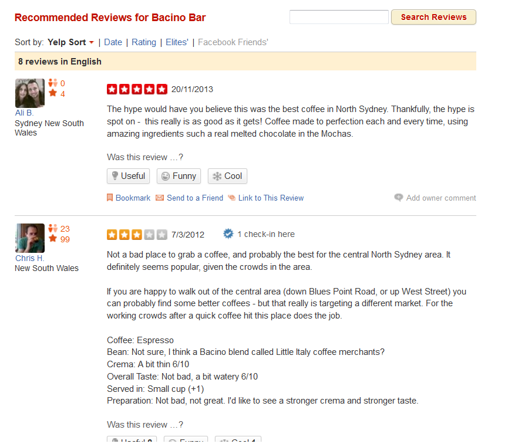

Final Project
Data Science - General Assembly
Sydney
Agenda
- Problem
- Data
- Solution
- Conclusion
(Description, Hypothesis...)
(Structure, Overview...)
(Approach, Design philosophy...)
(Challenges, Learnings, What's next...)
Problem
Yelp Recruiting Kaggle Competition
How many "useful" votes will a Yelp review receive?
Hypothesis
Reviews written by frequent and reputed users are most likely to get maximum number of useful votes.
Benefits for Yelp
- Better sorting algorithm
- Recruitment
Yelp review system
Some interesting stats
** http://officialblog.yelp.com/2013/02/yelpcom-welcomes-100-million-unique-visitors-in-january-2013.html
Similar Businesses
Data
| Review | User | Business | Checkin |
|---|---|---|---|
| type | type | type | type |
| review_id | user_id | business_id | business_id |
| votes_useful | votes_useful | open | checkin_info |
| votes_funny | votes_funny | categories | |
| votes_cool | votes_cool | full_address | |
| stars | average_stars | stars | |
| date | name | name | |
| text | review_count | review_count | |
| user_id | city | ||
| business_id | state | ||
| neighbourhood | |||
| latitude | |||
| longitude |
Data visually
Dataset
Reviews Age

Business Locations
Zoom @ Level 7
Zoom @ Level 8
Zoom @ Level 9
Top cities (# of businesses)

Reviews Star rating frequency
- Preprocessing
- Data Mining
- Visualization
- Statistical Methods
Solution
Subtasks ...
Solution Environment

Approach
generalisation - making predictions from data
(Supervised - Regression)
- Preprocess training set
- Determine input feature set
- Design algorithm
- Cross Validate
- Predict
- Evaluate the accuracy
Steps
Features
- Review text length
- Age of the review
- Business- review count
- Business- total checkins
- User- review count
- User- average star rating
- User- average votes
Score (user + business)
Sentiment Scores
- Natural Language Toolkit (Python)
- Precalculated valence scores (Online)
| Word | Score |
|---|---|
| ability | 2 |
| abuse | -3 |
| accept | 1 |
| accuse | -2 |
Score (user + business + sentiments)

Score (user + business + sentiments + votes)

Conclusion
- Unstructured Data
- Computational limitations
Challenges...
- Seeing is believing
- Out of the box tools
Learnings...
- Try some complex models
- Build interactive visualizations
- Explore further into Sentiment analysis
If I had enough time...
Thanks
- Rainer
- Fellow Participants
- GA
THE END
Pradeep Pradhan
pradeeppradhan@gmail.com